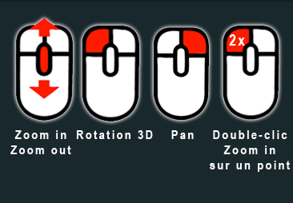

<!DOCTYPE html>
<html lang="en">
<head>
  <meta charset="utf-8">
  <meta name="description" content="">
  <meta name="author" content="">
  <meta name="viewport" content="width=device-width, initial-scale=1.0, user-scalable=no">
<!--  <link rel="icon" href="../test/favicon.ico" /> -->
  <link rel="icon" href="favicon.ico" />
  <title>Géoportail LiDAR du SIT-Jura</title>
  <link rel="stylesheet" type="text/css" href="../build/potree/potree.css">
  <link rel="stylesheet" type="text/css" href="../libs/jquery-ui/jquery-ui.min.css">
  <link rel="stylesheet" type="text/css" href="../libs/openlayers3/ol.css">
  <link rel="stylesheet" type="text/css" href="../libs/spectrum/spectrum.css">
  <link rel="stylesheet" type="text/css" href="../libs/jstree/themes/mixed/style.css">
  <link rel="stylesheet" href="sitnapp/css/sitn.css" type="text/css">
</head>

<body>
  <script>
    var isIE = /*@cc_on!@*/false || !!document.documentMode;
      if (isIE) {
        alert('Internet Explorer n\'est pas supporté pour cette application, vous allez être redirigés vers le Géoportail 2D');
        window.location.replace("https://geo.jura.ch");
      }
  </script>
  <script src="../libs/jquery/jquery-3.1.1.min.js"></script>
  <script src="../libs/spectrum/spectrum.js"></script>
  <script src="../libs/jquery-ui/jquery-ui.min.js"></script>
  <script src="../libs/three.js/build/three.min.js"></script>
  <script src="../libs/three.js/extra/lines.js"></script>
  <script src="../libs/other/BinaryHeap.js"></script>
  <script src="../libs/tween/tween.min.js"></script>
  <script src="../libs/d3/d3.js"></script>
  <script src="../libs/proj4/proj4.js"></script>
  <script src="../libs/openlayers3/ol.js"></script>
  <script src="../libs/i18next/i18next.js"></script>
  <script src="../libs/jstree/jstree.js"></script>
  <script src="../build/potree/potree.js"></script>
  <script src="../libs/plasio/js/laslaz.js"></script>
  
  <script src="sitnapp/js/sitn.js"></script>
  <script src="sitnapp/js/gmf_search_box.js"></script>
  
  <!-- INCLUDE ADDITIONAL DEPENDENCIES HERE -->

  
  <div class="potree_container" style="position: absolute; width: 100%; height: 100%; left: 0px; top: 0px; ">
    <div id="gmf_search_input">
      <input id="places" placeholder="Saisir une adresse">
    </div>
    <div id="potree_render_area"></div>
    <div id="potree_sidebar_container"> </div>
  </div>
  
  <script>

  window.viewer = new Potree.Viewer(document.getElementById("potree_render_area"));
    
  viewer.setEDLEnabled(true);
  viewer.setFOV(5);
  viewer.setPointBudget(4*1000*1000);
  viewer.loadSettingsFromURL();
  viewer.setDescription('Géoportail LiDAR du<a target=_blank href="https://geo.jura.ch/"> SIT-Jura</a>');
  viewer.loadGUI(() => {
    viewer.setLanguage('fr');
    $("#menu_scene").next().show();
    viewer.toggleSidebar();
    
    let section = $(`
        <h3 id="menu_meta" class="accordion-header ui-widget"><span>Aide navigation</span></h3>
        <div class="accordion-content ui-widget"></div>
      `);
      let content = section.last();
      content.html(`
           
      `);
      section.first().click(() => content.slideToggle());
      section.insertBefore($('#menu_about'));
    });

    async function loadDatasets(){
      let scene = viewer.scene;
      {
        let result = await Potree.loadPointCloud("https://geo-test.jura.ch/lidar/pointclouds/2022/jura/metadata.json"); 
        let pointcloud = result.pointcloud;
        let material = pointcloud.material;

        pointcloud.name = "Lidar 2022 Jura - Swisssurface 3D";
        material.size = 1.5;
        material.pointSizeType = Potree.PointSizeType.FIXED;
        material.activeAttributeName = "rgba";
        material.shape = Potree.PointShape.CIRCLE;
        scene.addPointCloud(pointcloud);
        viewer.fitToScreen();
        pointcloud.visible = true;
      }
      {
        let result = await Potree.loadPointCloud("https://geo-test.jura.ch/lidar/pointclouds/2022/hetre_ajoie/metadata.json");
        let pointcloud = result.pointcloud;
        let material = pointcloud.material;

        pointcloud.name = "Lidar 2022 Jura Helimap - STDL";
        material.size = 1.5;
        material.pointSizeType = Potree.PointSizeType.FIXED;
        material.shape = Potree.PointShape.CIRCLE;
        scene.addPointCloud(pointcloud);
        viewer.fitToScreen();
        pointcloud.visible = false;
      }
      {
        let result = await Potree.loadPointCloud("https://sitn.ne.ch/lidar/pointclouds/aerial/2022/jura/metadata.json"); 
        let pointcloud = result.pointcloud;
        let material = pointcloud.material;

        pointcloud.name = "Lidar 2022 Jura (NE) - Swisssurface 3D";
        material.size = 1.5;
        material.pointSizeType = Potree.PointSizeType.FIXED;
        material.activeAttributeName = "rgba";
        material.shape = Potree.PointShape.CIRCLE;
        scene.addPointCloud(pointcloud);
        viewer.fitToScreen();
        pointcloud.visible = false;
      }

    };

    loadDatasets();

  </script>
</body>
</html>
